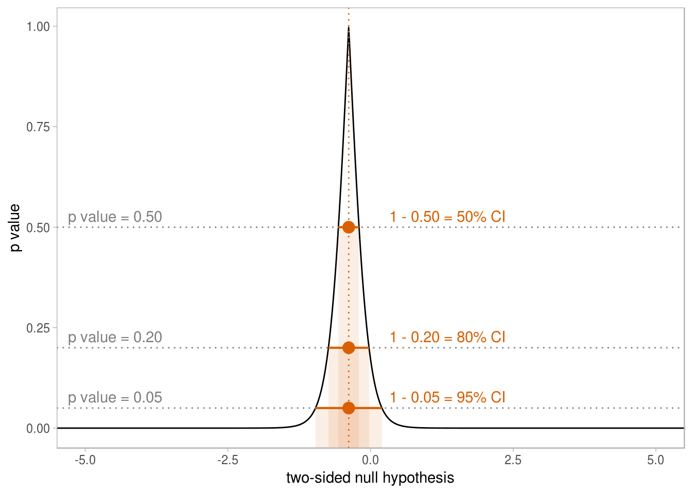

Scratch space
set.seed(12345)
x = rnorm(10)
ci_color = "#d95f02"
intervals = data_frame(
# conf.level = seq(.7, .99, by = .01),
conf.level = c(.50, .80, .95),
alpha = 1 - conf.level,
test = map(conf.level, ~ tidy(t.test(x, conf.level = ..1)))
) %>%
unnest()
crossing(
null = seq(-6, 6, length.out = 1001)
) %>%
mutate(test = map(null, ~ tidy(t.test(x, mu = ..1)))) %>%
unnest() %>%
ggplot() +
geom_line(aes(x = null, y = p.value)) +
geom_hline(aes(yintercept = alpha), color = "gray50", data = intervals, linetype = "dotted") +
geom_rect(aes(xmin = conf.low, xmax = conf.high, ymax = alpha), ymin = -1, fill = ci_color, alpha = .1,
data = intervals, color = NA, size = .75) +
geom_pointrangeh(aes(xmin = conf.low, xmax = conf.high, x = estimate, y = alpha),
data = intervals, color = ci_color, size = .75) +
geom_vline(aes(xintercept = estimate), data = intervals, color = ci_color, linetype = "dotted") +
geom_text(aes(y = alpha, label = paste0("p value = ", format(alpha, digits = 2, nsmall = 2))),
x = -5.3, vjust = -.5, hjust = 0, data = intervals, color = "gray50") +
geom_text(aes(y = alpha, label = paste0("1 - ", format(alpha, digits = 2, nsmall = 2), " = ", round((1 - alpha) * 100), "% CI")),
x = 0.6, vjust = -.5, color = ci_color, hjust = 0, data = intervals) +
theme_light() +
theme(panel.grid = element_blank()) +
xlab("two-sided null hypothesis") +
ylab("p value") +
coord_cartesian(xlim = c(-5, 5))